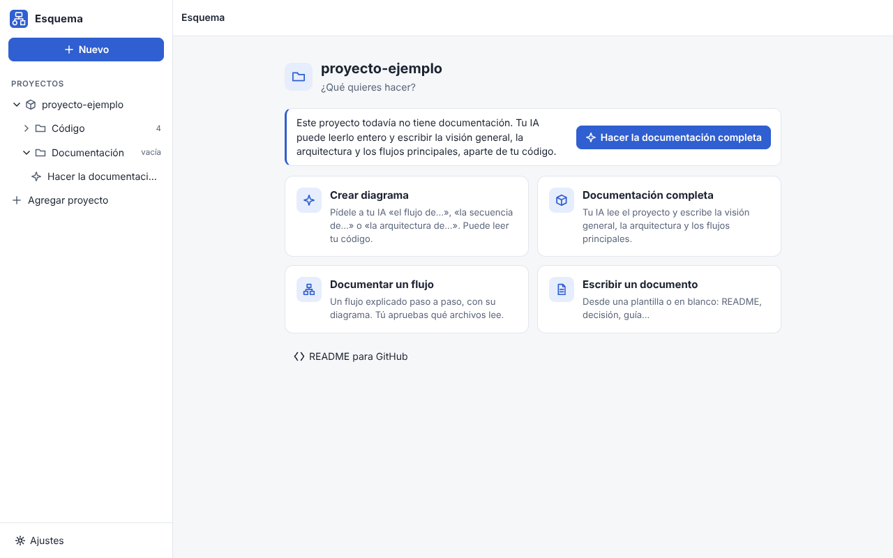
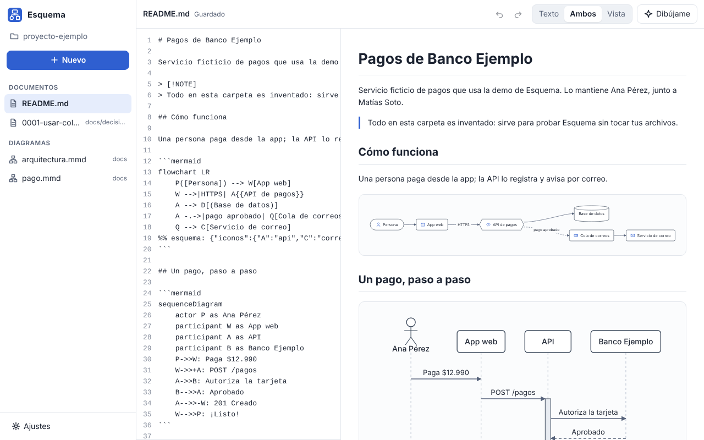
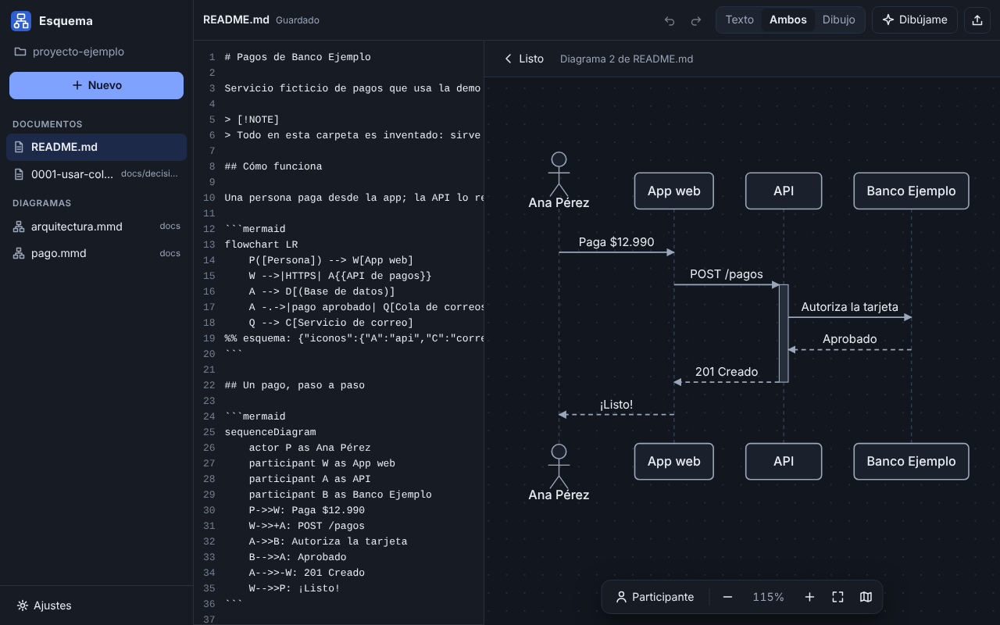
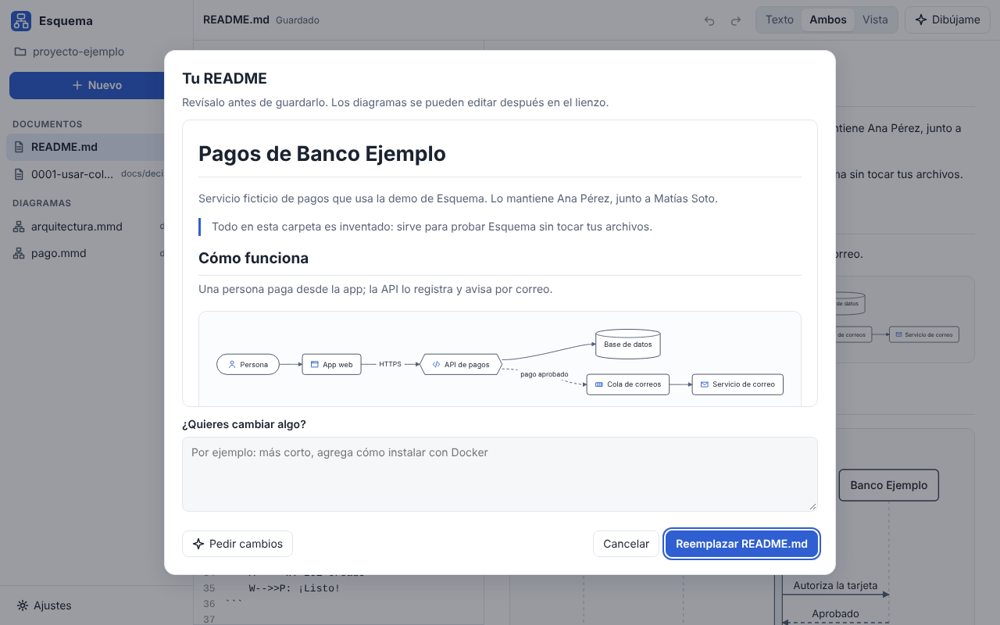
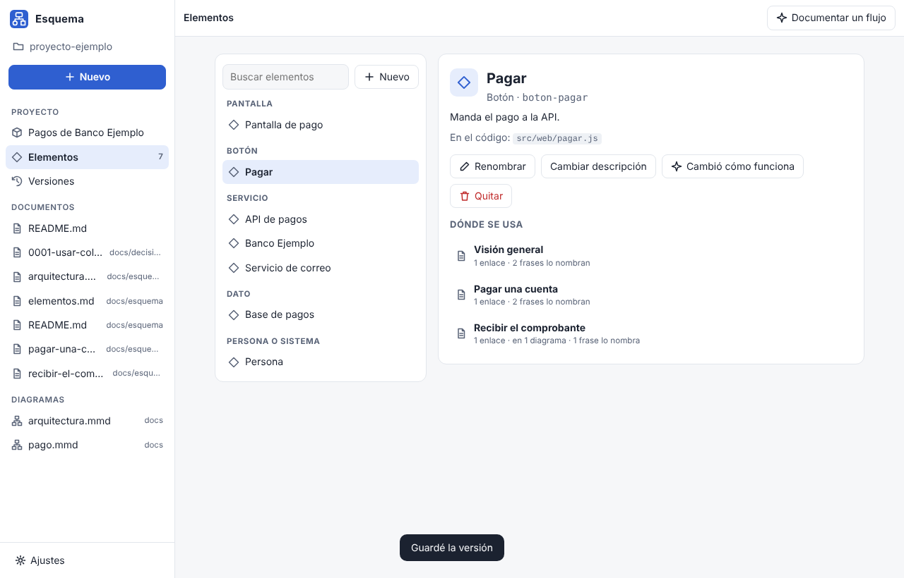

Diagramas que GitHub ya entiende.Diagrams GitHub already understands.
Escribe Mermaid o dibuja en el lienzo: los dos se mantienen al día y cada cambio toca solo su línea. Tu documentación queda en tus .md y .mmd, y tu README la muestra igual.Write Mermaid or draw on the canvas: both stay in sync and every change touches only its own line. Your docs stay in your .md and .mmd files, and your README shows them as is.
Sin cuenta. También el código, en GitHub.No account. The code is on GitHub.
D --> E[Correo] o rompe algo a propósito.This is Esquema's engine, right here. Rename a box, add D --> E[Email] or break something on purpose.Un motor propio, sin dependencias.Its own engine, no dependencies.
Esquema dibuja con su propio motor (117 KB sin minificar) en vez de Mermaid (5,4 MB minificado). Por eso puede volver a dibujar en cada tecla: si el cambio no mueve nada, no vuelve a acomodar y solo reemplaza lo que cambió.Esquema draws with its own engine (117 KB unminified) instead of Mermaid (5.4 MB minified). That's why it can redraw on every keystroke: if a change doesn't move anything, it doesn't lay out again and only replaces what changed.
Flujo, 50 nodosFlowchart, 50 nodes
Flujo, 200 nodosFlowchart, 200 nodes
Flujo, 1.000 nodosFlowchart, 1,000 nodes
Secuencia, 200 mensajesSequence, 200 messages
Mismo navegador (Chromium), mismos diagramas, mediana de varias pasadas, Mermaid 12.2.0, dibujando desde cero. Al editar, Esquema tarda todavía menos (12 ms con 200 nodos). Lo midió herramientas/comparar_mermaid.mjs: córrelo en tu computador y compara.Same browser (Chromium), same diagrams, median of several runs, Mermaid 12.2.0, drawing from scratch. While editing, Esquema is even faster (12 ms with 200 nodes). Measured with herramientas/comparar_mermaid.mjs: run it on your computer and compare.
Texto y dibujo, la misma cosa.Text and drawing, one and the same.
El texto Mermaid es la fuente de verdad. Lo que haces en el lienzo se escribe ahí, cambiando solo la línea necesaria: tus comentarios, tu sangría y tu estilo quedan como estaban.The Mermaid text is the source of truth. What you do on the canvas is written there, changing only the line it needs: your comments, indentation and style stay as they were.
- 1Escribe o dibujaWrite or drawAutocompletar y errores claros en el texto; en el lienzo, doble clic para crear, arrastra para conectar, ⌘Z para deshacer.Autocomplete and clear errors in the text; on the canvas, double-click to create, drag to connect, ⌘Z to undo.
- 2Se acomoda soloIt lays itself outCapas, grupos y flechas que no pisan nada. Si mueves algo a mano, queda fijado en una línea que Mermaid ignora.Layers, groups and arrows that don't overlap. Move something by hand and it stays pinned in a line Mermaid ignores.
- 3GitHub lo muestra igualGitHub shows it as isEs Mermaid de verdad dentro de tu
.md: haz commit y tu README ya tiene el diagrama. También exporta SVG, PNG o «Copiar para GitHub».It's real Mermaid inside your.md: commit and your README already has the diagram. It also exports SVG, PNG or “Copy for GitHub”.
Lo que a Mermaid le falta, sin salir de Mermaid.What Mermaid is missing, without leaving Mermaid.
Documentos con diagramasDocuments with diagrams
Tus .md con su vista previa en vivo. «Editar» abre cada diagrama en el lienzo, en el mismo lugar del documento.Your .md files with a live preview. “Edit” opens each diagram on the canvas, right where it is in the document.
Arquitectura con íconosArchitecture with icons
Servidor, base de datos, cola, nube, API, navegador, celular… Íconos propios que GitHub ve como un flujo normal.Server, database, queue, cloud, API, browser, phone… Its own icons, which GitHub sees as a regular flowchart.
Tu IA te ayudaYour AI helps
Con Claude Code, Codex o Gemini y tu cuenta: pídele «el flujo de…», «la secuencia de…» o «la arquitectura de…» y dibuja ese tipo de diagrama, leyendo tu código si quieres. También escribe el README de tu proyecto. Cada cambio trae «Quitar este cambio».With Claude Code, Codex or Gemini and your account: ask for “the flow of…”, “the sequence of…” or “the architecture of…” and it draws that kind of diagram, reading your code if you want. It also writes your project's README. Every change has “Remove this change”.
Tu carpeta, de un vistazoYour folder at a glance
La carpeta entera como árbol, y un inicio con lo que puedes hacer: crear un diagrama, la documentación completa, documentar un flujo o escribir un documento.The whole folder as a tree, and a home screen with what you can do: create a diagram, the full documentation, document a flow or write a document.
Documenta un proyecto enteroDocument a whole project
Agrega tus repositorios: Esquema los lee y tu IA escribe la visión general, la arquitectura y los flujos en una carpeta aparte (~/Esquema/), con su propio historial. Después eliges qué pasar a cada repo. Antes de cada envío ves exactamente qué se manda.Add your repositories: Esquema reads them and your AI writes the overview, architecture and flows in a separate folder (~/Esquema/), with its own history. Then you choose what to copy into each repo. Before every request you see exactly what gets sent.
Todo conectado, con versionesEverything connected, with versions
Pantallas, botones y servicios son elementos: renombra o quita uno y cambia en todos los documentos y diagramas a la vez. Cada versión es un commit solo de la documentación; compárala y restáurala.Screens, buttons and services are elements: rename or remove one and it changes in every document and diagram at once. Each version is a commit of only the docs; compare and restore it.
Plantillas y comunidadTemplates and community
Arquitectura, secuencia de una API, flujo de usuario, proceso, README, ADR, runbook… y las del catálogo de la comunidad, en «Nuevo» → «Comunidad».Architecture, API sequence, user flow, process, README, ADR, runbook… plus the community catalog, under “New” → “Community”.
Errores que se entiendenErrors you can understand
«Línea 4: falta cerrar «]» en «B[Pagar». Prueba: B[Pagar]». Y mientras lo arreglas, el lienzo sigue mostrando el último dibujo bueno.“Line 4: «]» is missing in «B[Pay». Try: B[Pay]”. While you fix it, the canvas keeps showing the last good drawing.
Tus archivos, tu carpetaYour files, your folder
Trabaja con la carpeta de tu proyecto: no copia nada, no deja archivos ocultos y recarga si cambias algo en otro editor o con git pull. Sin cuentas ni telemetría.Works with your project folder: copies nothing, leaves no hidden files and reloads when you change something in another editor or with git pull. No accounts, no telemetry.





Cada uno es bueno en lo suyo.Each one is good at its own thing.
Si quieres dibujar a mano alzada o cualquier forma libre, draw.io y Excalidraw son excelentes. Esquema es para la documentación que vive junto a tu código, en el formato que GitHub ya dibuja.If you want freehand sketches or any free-form shape, draw.io and Excalidraw are excellent. Esquema is for the docs that live next to your code, in the format GitHub already draws.
| Esquema | Mermaid Live Editor | draw.io | Excalidraw | |
|---|---|---|---|---|
| Guarda Mermaid (GitHub lo dibuja en tu README)Saves Mermaid (GitHub draws it in your README) | SíYes | SíYes | No: su propio formato o una imagenNo: its own format or an image | No: su propio formato o una imagenNo: its own format or an image |
| Editar escribiendo textoEdit by typing text | SíYes | SíYes | No | No |
| Editar dibujando en un lienzoEdit by drawing on a canvas | SíYes | NoNo | SíYes | SíYes |
| Texto y lienzo sincronizadosText and canvas in sync | Sí, en los dos sentidosYes, both ways | No | No | No |
| Documentos Markdown con diagramas editables en el lugarMarkdown documents with diagrams editable in place | SíYes | No | No | No |
| Tipos de diagramaDiagram types | Flujo, secuencia y arquitectura (el resto se conserva y GitHub lo muestra)Flowchart, sequence and architecture (the rest is kept and GitHub shows it) | Todos los de MermaidAll of Mermaid's | Formas libres, casi cualquier diagramaFree-form, almost any diagram | Formas libres, estilo a mano alzadaFree-form, hand-drawn style |
| App de escritorioDesktop app | Mac, Windows, Linux | WebWeb | Mac, Windows, Linux | WebWeb |
| Gratis y de código abiertoFree and open source | AGPL-3.0 | MIT | Apache-2.0 | MIT |
Lo que suelen preguntar.What people usually ask.
¿Lo que hago en Esquema se ve igual en GitHub?Does what I make in Esquema look the same on GitHub?
Sí. Esquema guarda Mermaid de verdad: archivos .mmd y bloques mermaid dentro de tus .md, que GitHub dibuja solo. Lo propio de Esquema (posiciones fijadas a mano, íconos y estilo de las flechas) va en una línea de comentario que Mermaid ignora.Yes. Esquema saves real Mermaid: .mmd files and mermaid blocks inside your .md files, which GitHub draws on its own. Esquema's extras (hand-pinned positions, icons and arrow style) live in a comment line Mermaid ignores.
¿Qué tan rápido es, de verdad?How fast is it, really?
En el mismo navegador (Chromium) y con los mismos diagramas, Mermaid 12.2.0 tarda 423 ms en dibujar un flujo de 50 nodos y 7.729 ms uno de 1.000; Esquema, 7 ms y 75 ms. Es la mediana de varias pasadas con herramientas/comparar_mermaid.mjs, que está en el repositorio para que cualquiera lo repita.In the same browser (Chromium) with the same diagrams, Mermaid 12.2.0 takes 423 ms to draw a 50-node flowchart and 7,729 ms for a 1,000-node one; Esquema takes 7 ms and 75 ms. That's the median of several runs with herramientas/comparar_mermaid.mjs, which is in the repository so anyone can repeat it.
¿Qué diagramas dibuja?Which diagrams does it draw?
Flujos, secuencias y arquitectura (flujos con formas e íconos de servidor, base de datos, cola, nube…). Los otros tipos de Mermaid, como gantt o ER, se conservan tal cual y GitHub los sigue mostrando; Esquema los irá dibujando de a uno.Flowcharts, sequences and architecture (flowcharts with shapes and icons for servers, databases, queues, clouds…). Other Mermaid types, like gantt or ER, are kept as they are and GitHub keeps showing them; Esquema will draw them one at a time.
¿Mis archivos salen de mi computador?Do my files leave my computer?
No. Esquema trabaja con los .md y .mmd de la carpeta que eliges, no los copia ni los manda a ninguna parte y no tiene servidores ni telemetría. Si usas tu IA, ella recibe solo lo que le pides: para el README, solo los nombres de los archivos; para documentar un proyecto, el README, las guías, la lista de archivos y los mensajes de git, más los archivos de código que tú apruebes. Antes de cada envío ves exactamente qué se manda.No. Esquema works with the .md and .mmd files in the folder you choose, doesn't copy or send them anywhere, and has no servers or telemetry. If you use your AI, it only gets what you ask: for the README, only file names; to document a project, the README, guides, file list and git messages, plus the code files you approve. Before every request you see exactly what gets sent.
¿Necesito una IA para usarlo?Do I need an AI to use it?
No. La IA es opcional: si ya tienes Claude Code, Codex o Gemini con tu cuenta, Esquema la usa para «Dibújame», para escribir el README y para documentar un proyecto. Corre sin tu memoria personal y sin herramientas: solo ve lo que Esquema le muestra. Al documentar un proyecto, con «Revisión a fondo» puede además leer (solo leer) la carpeta del código, nunca tus .env, llaves ni .git. Cada cambio de la IA se puede quitar con un toque.No. The AI is optional: if you already have Claude Code, Codex or Gemini with your account, Esquema uses it for “Draw it”, to write your README and to document a project. It runs without your personal memory and without tools: it only sees what Esquema shows it. When documenting a project, “Thorough review” also lets it read (only read) the code folder, never your .env, keys or .git. Every AI change can be removed with one tap.
¿Por qué mi computador dice que no puede verificar la app?Why does my computer say it can't verify the app?
Porque Esquema no paga los certificados de Apple ni de Microsoft. Con el instalador de un comando no pasa en Mac. Si bajaste el archivo a mano:Because Esquema doesn't pay for Apple's or Microsoft's certificates. With the one-command installer it doesn't happen on Mac. If you downloaded the file by hand:
- macOS 15: intenta abrir Esquema una vez, ve a Ajustes del Sistema → Privacidad y seguridad y, abajo, toca «Abrir igualmente».macOS 15: try to open Esquema once, go to System Settings → Privacy & Security and, at the bottom, click “Open Anyway”.
- Windows: si aparece «Windows protegió tu PC», toca «Más información» → «Ejecutar de todas formas».Windows: if “Windows protected your PC” appears, click “More info” → “Run anyway”.
Cada descarga tiene su huella SHA-256 en el Release, y el código de cada versión está en GitHub.Every download has its SHA-256 checksum in the Release, and each version's code is on GitHub.
¿Cuánto cuesta?How much does it cost?
Nada. Esquema es gratis y de código abierto (AGPL-3.0), sin cuentas ni publicidad. Las plantillas del catálogo de la comunidad son de dominio público (CC0).Nothing. Esquema is free and open source (AGPL-3.0), with no accounts or ads. Community catalog templates are public domain (CC0).
Hecho entre todos.Made together.
Hay lugar para cualquiera, programes o no.There's room for everyone, whether you code or not.
Comparte una plantillaShare a template
Cuéntala con palabras en el formulario y nosotros armamos el resto. Aparece en Esquema para todos.Describe it in words in the form and we'll do the rest. It shows up in Esquema for everyone.
ConversaTalk
Dudas, ideas y lo que documentaste, en Discussions.Questions, ideas and what you documented, in Discussions.
Prueba y aportaTest and contribute
Pruébalo en tu Windows o Linux, traduce o toma una tarea de bienvenida. Todo está en cómo aportar.Try it on your Windows or Linux, translate, or pick a good first issue. It's all in how to contribute.
Gratis, sin cuenta, para tu sistema.Free, no account, for your system.
Los instaladores de un comando bajan la última versión, verifican su huella SHA-256 y la instalan solo para tu usuario, sin contraseña de administrador. Esquema avisa dentro de la app cuando hay una versión nueva.The one-command installers download the latest version, check its SHA-256 and install it for your user only, no admin password. Esquema tells you inside the app when there's a new version.
Mac tu sistemayour system
Apple Silicon, macOS 15 o posterior. En la Terminal:Apple Silicon, macOS 15 or later. In Terminal:
curl -fsSL https://raw.githubusercontent.com/esquema-app/esquema/main/instalar.sh | bash
Windows tu sistemayour system
Windows 10 u 11, 64 bits. Baja el instalador o, en PowerShell:Windows 10 or 11, 64-bit. Get the installer or, in PowerShell:
irm https://raw.githubusercontent.com/esquema-app/esquema/main/instalar.ps1 | iex
Linux tu sistemayour system
x86_64. El comando de Mac sirve igual (con su lanzador esquema), o:x86_64. The Mac command works too (with its esquema launcher), or:
App sin firmar. El sistema puede avisar la primera vez: así se abre igual, en esta pregunta. Todas las versiones, con su .sha256, en Releases.Unsigned app. Your system may warn you the first time: here's how to open it anyway, in this question. Every version, with its .sha256, is in Releases.